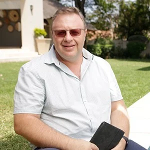
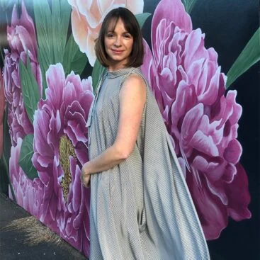

Founder & CEO
OUR TEAM
Different skills.
A shared direction.
The people behind the strategy, creative work and digital experiences.

02SVP
Bruno Felicidade Jones
Strategic Head
Veronica Botes
Executive Producer
Joe Erasmus
Web Developer
Ndivhuwo Mamukhwana

06Creative Head
Leoni Joubert
Senior Graphic Designer
Zelna Forsyth
Blogger
Diana Lister
THE PEOPLE BEHIND THE WORK
Get to know
Trace.
Explore the published team profiles for more about individual backgrounds and experience.
Read the team profiles on the live site ↗